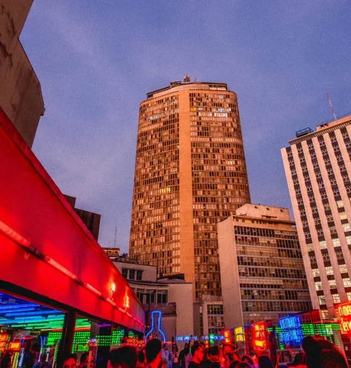

Terraço no 9º andar
Irasshaimase · いらっしゃいませ
Eu sabia que você ia dizer sim!
Já sei onde vamos comemorar:
Tokyo 東京
Karaokê · Pista de dança · Terraço com vista do centro
Rua Major Sertório, 110 Vila Buarque, São Paulo Ver no Google Maps @tokyo.sp Ver no Instagram tokyo011.com.br Ver o siteNão esquece o documento com foto, e vai escolhendo a música.